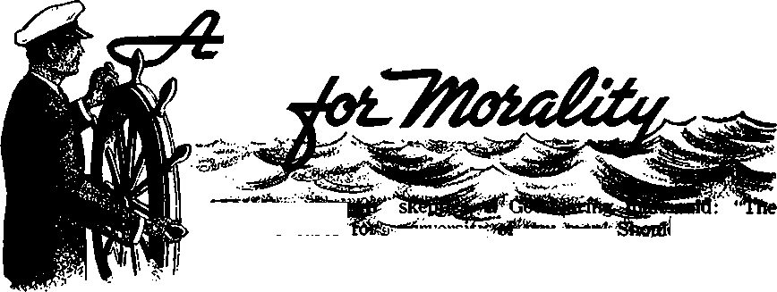

THE REASON FOR THIS MAGAZINE
News sources that are able to keep you awake to the vital issues of our times must be unfettered by censorship and selfish interests. “Awakel” has no fetters. It recognizes facts, faces facts, is free to publish facts. It is not bound by political ties; it is unhampered by traditional creeds. This magazine keeps itself free, that it may speak freely to you. But it does not abuse its freedom. It maintains integrity to truth.
The viewpoint of "Awakel" is not narrow, but is international. "Awake!" has its own correspondents in scores of nations. Its articles are read in many lands, in many languages, by millions of persons.
In every issue "Awake!" presents vital topics on which you should be informed. It features penetrating articles on social conditions and offers sound counsel for meeting the problems of everyday life. Current news from every continent passes in quick review. Attention is focused on activities In the fields of government and commerce about which you should know. Straightforward discussions of religious issues alert you to matters of vital concern. Customs and people in many lands, the marvels of creation, practical sciences and points of human interest are all embraced in its coverage. "Awake!" provides wholesome, instructive reading for every member of the family.
"Awake!” pledges itself to righteous principles, to exposing hidden foes and subtle dangers, to championing freedom for all, to comforting mourners and strengthening those disheartened by the failures of a delinquent world, reflecting sure hope for the establishment of God's righteous new order in this generation.
Get acquainted with "Awake!1' Keep awake by reading "Awakel"
Published Simultaneously nr the Unitid Status by thb WATCHTOWER BIBLE AND TRACT SOCIETY OF NEW YORK, INC. 117 Adams Street Brooklyn, N.Y. 11201, U.S.A.
and in England by WATCH TOWER BIBLE AND TRACT SOCIETY
Watch Tower House, The Ridgeway London N.W. 7, England N. H. Knobs, President Grant Suiter, Secretary
Printing this issue: 4,100,000
4d a ww (Aastralla, 5d; Soith Afrl«a,3tta)
Yearly aubveriptiem rates
Oflm tor semimonthly edltiona
AmiNm, U.S.A 117 Adams Street, Brooklyn, N.Y. 11201 fl Autralla, 11 Beresford Rd., StratWld, N.8.W.
Canadit, ISO Bridgeiaod Ave., Toronto 19, Ont
England, Watch Tower Houk,
Now Zealand, 621 New North Rd., Auckland S.W. 1
Soith Africa, Private Bag 2, P.O. Elandrfoutein, TtL
(Monthly editions cost half the abwe rates.)
RsnlttanM* for euburlptlom should be sent. to the office io your country. Other*In send your remittance to Brooklyn. Natfae of expiration is sent at least two lasuee before aubscrlption expires.
Now published in 25 languages Ssmlmaathty—Afrikaans, Danish, Dutch, EtiilUb, Finnish, French, German, Greek, Italian. Japanese. Korean, NcnregUu, Portuguese, Spanish, Swedish, Tagalog, Sulu.
Monthly—Cebu-VWan> Chinese, Clnyanja, Hocano, Malaya-Um, Polish, Tamil, Ukrainian.
changes OF ADDRESS rhoiH reach n thirty day* before year mavlni date. Give a* your aid and new addrm (if partible, ynir old addreu label). Write Watch Tower, Watch Tower Home, The Ridgeway. London N.W. 7, England.
Entered a* second-class matter at Brooklyn, N.Y. Printed In England
Tho Bible translation regaiarly used lit “Awake!” H the Mew World Translation of the Holy Sarlptam, 1961 edit When other translations are ittd, thia b dearly Barked.
CONTENTS
What’s Happening to the Family?
Business and Government
Looking to the Kingdom of God
Prove Your Love of Righteousness Watching the World
Volums XLV London, England, October 8, 1964 Number 19
ISSUE
down involves everybody. You may wish it were not happening, but it is. You may prefer to think that it does not affect you, but it does. You cannot evade it.
One way in which it affects you is by placing you and your loved ones in jeopardy. The extent of the threat to life and property in country after country is shown by reports such as this one from America, where it is said that the average citizen now faces odds 'greater than one in ten that he will be mugged, robbed or otherwise victimized by criminals within the next ten years.’
In the Orient those who handle the news declare: ‘We are so near the point of chaos that a sense of insecurity is becoming part of us. We live in the uneasy air of impending violence. Peace and order have not reached a stage where people can walk freely about or feel secure in their own homes.’
In Africa the police say that an increase in crimes and other offenses 'has become a regular feature each year.’
What are the prospects for a reversal of this trend? From Europe comes word that ‘these critical situations that are a wor
ry to all are expected to become even more severe.’
Another reason why no one can evade this problem is that each individual is daily faced with decisions that have to do with morality. Does he obey traffic laws, or does he disobey them when no one observes? When he speaks, is it always the truth, or does he lie about some things for personal advantage? When making purchases, does he pay for everything, or does he take items when no one looks? Are his business practices honest, or does he deceive his customers and competitors to promote his interests? If two persons are living together as husband and wife, are they legally married, or are they really living in fornication? And if they are properly married, are they faithful to each other, or do they flirt with others on occasion? Do individuals live lives in harmony with the religious faith they profess? How would we personally answer these questions?
The pressures toward immoral conduct are strong. You need to know how to protect yourself. Let us look at the facts to determine what it is that you actually face, where the responsibility lies and what you can do about it.
MANY authorities today speak of a “new morality.” A professor at Northwestern University spoke of it as “the wholly new standards of honesty'* that the world of mankind have adopted. He meant, of course, the new standards of dishonesty.
“It has become the fashion," columnist Walter Lippmann wrote, “to expect cheating and to excuse a certain amount of it . . . The popular standards of morality today allow for much more dishonesty than they did some time back.”1 Oh, yes, truthfulness and honesty are still honored by many as the best policies, but in actual practice one finds lying, stealing and all kinds of cheating.
Cheating at school, for instance, is widespread. In one survey, 90 percent of the students in a Toronto, Canada, grade nine classroom condoned cheating. A recent survey at the University of Pennsylvania showed that 40 percent of the undergraduates admit to frequent cheating.
But, then, young persons are taught from an early age to be dishonest. How so? The father who thinks nothing of cheating on his income tax should not be surprised if his son cheats at school. What of the driver who purposely breaks the speed law and who urges his children to keep an eye out for a possible police car in the rear? When someone knocks at the door and the mother tells her daughter to say she is not at home, she teaches her daughter to lie. So also does the mother who pretends she has a headache, to escape some obligation. Not surprisingly, at a meeting of police authorities from three Scandinavian countries, the chief of police in Norway said: "During hearings of children I have met with situations where parents were lying just as fast as the children.’’2 Where parents do not show a love for integrity, the children are often accomplished liars before they enter their teens.
Lying by adults has permeated the way of life of mankind so that it becomes acceptable and expected in some cultures; hence parents need to watch that they do not “pick up’’ any popular custom of lying, thereby infecting their children. In France it is accepted that people "arrange” problems, cooking up a story that they do not really expect the other person to believe, but one that justifies persons in authority for letting others do what they want. “Tell him that your grandmother died,” says the book Souvenirs de la France. “He will know it’s a lie, but he’ll let you leave anyhow.”
The “new morality” has no love for integrity. Small wonder, then, that truthhunting has become a big business! One company offering lie detector service charges $50 a test and reports a yearly gross income of $135,000. Such firms thrive because so many have no love forthetruth.
Especially when it comes to money and material things do we find that the world has no love for honesty. Writer C. P. Snow has said: “We are more dishonest about money than our grandfathers were."3 At least 75 percent of auto insurance complaints in the United States are reported to involve fraud! In the same country a man who found a huge sum of money returned it to the owners and was severely criticized by many for not having kept it. In England a report says that “one person in every five indulges in shoplifting.”1
So serious is employee dishonesty in Canada that the president of the Retail Sales Audit Systems, Ltd., asserted: “There is no such thing as an honest person. There are only some more honest than others.”* The Toronto manager of Pinkerton’s national detective agency claims employee stealing has increased steadily in Canada until losses total “at least $100 million a year.” He adds:
“In our investigations we've found, as an average, that one out of every three employees is basically dishonest—which means he will seek ways oi* stealing; that one out of every three employees will be dishonest if given the opportunity and the third employee is the only one who deserves the full trust of his employer.”6
In the United States employees are reported to steal from employers an average of $150 per person per year. A manager of a firm that sells insurance to protect against employee dishonesty reports that he bonds employees who are not criminal types but who are respected citizens—yet every working day of his life his company must pay out, because of employee dishonesty, an average of $8,000! He found out in a survey of 65 bank embezzlers that virtually every one was a respected pillar in his community and that most of them thought they were honest, regarding their dishonest activities as "borrowing.”
‘‘We live in a corrupt society,” declares another authority on the “new morality," one Saul Astor, president of a firm called Management Safeguards, Inc., which investigates dishonesty in business. In one case he found a New York City auto dealer losing $75,000 a year. An employee was believed responsible. “An employee?” asked Astor. “This dealer employed eighty men. Sixty were stealing from him. I’d like to say that this was a particularly corrupt organization. But it isn’t.”7
According to his investigation, moreover, there is no difference in the rate of dishonesty of men and women. “They steal with equal abandon,” he claims. “But women are more devious. They lie better. It’s harder to get a confession from them.”7
Though we do not expect to find love for rectitude among thugs, hoodlums and teen-age delinquents, where is the love of honesty among the well-to-do hotel guests who, during the first ten months of operation of New York’s new Americana Hotel, made off with 38,000 demitasse spoons, 18,000 towels, 355 silver coffee pots and 1,500 silver finger bowls, and 100 Bibles? And customs inspectors have found that prominent people, wealthy people, world-famous people, insist upon playing the game of cheating, lying to customs inspectors. Yes, the whole fabric of the world is threaded through and through with hypocritical speech, half truths, outright falsehoods, stained by all manner of dishonesty, on all social levels.
Perhaps there is hope that the rising generation will stem the tide of dishonesty, you may say. But what about the youth of today who will be the men, women and leaders of tomorrow? As we observe the young people of our time, what promise do we find of a better, a more stable tomorrow?
REFERENCES
1 Look, March 29, 1960.
2 politiken (Copenhagen), April 19, 1964.
3 Look, September 24, 1963.
4 What a Hope, by R. H. Green, 1964.
B Toronto Telegram, May 30, 1964.
b Canadian Weekly, week ol September 7-13, 1963.
t New York Joumal-American, June 30, 1964.
Wh
IN ALMOST every country juvenile crime and sexual immorality by youths are on the increase. Take a look at what is happening.
In the United States the latest crime rise was an average of 19 percent during the first three months of 1964. More than 85 percent of all cities with a population of 25,000 or more reported crime increases. “Frankly,” admitted a New York City police official, “we are losing the battle against crime.” Not only in New York but in other cities throughout the world the problem revolves around delinquent youth.
In Britain the annual report of the Home Secretary shocked many. It said: “The percentage of young people between 14 and 17 found guilty of indictable offense is now more than twice the prewar rate for boys and three times the prewar rate for girls.” British towns have been plagued by rival adolescent gangs, likened by a magistrate to “rat packs.” Such gangs of youths stirring up trouble and violence are a principal part of the crime problem in many lands.
In the Orient, in lands such as Japan and South Korea, crime by youths has reached frightening proportions. The police bureau in Seoul reports more than five hundred acts of violence a month, most of them being committed by teen-agers. “We can’t have even one day of peaceful life in Seoul,” said a newspaper, “because in the evening the streets become streets of terror.’’1
It is the same in the Philippine Islands, where a newspaper reported: “Every 30 minutes, a boy under 16 commits a crime—ranging from
petty thievery to rape—in Manila alone.” “It would seem that no Filipino is safe in the streets today,” it lamented. “The number of youngsters getting their kicks from thrill killing, vandalism, and general mayhem is steadily increasing.”*
And who is the victim of this earth-wide juvenile crime? The public. It is the public who are affected, endangered or attacked when youths throw stones at windows of cars, buses and trains; when vandals slash auto tires and steal auto parts; when youths deface or destroy public park or school property; when they snatch women’s purses; when they break into homes to commit burglary; when they rob people at the point of a knife or gun; when youngsters take narcotics and go wild; when they drive autos or other vehicles recklessly; and when youths violently attack people regardless of age, women often being assaulted sexually. Yes, it is the public that is daily being savagely bitten by this mad dog of juvenile crime!
No look at youth can ignore the breakdown of sex morality, for the "new morality” includes sexual immorality. This breakdown involves “respected” youths, high-school and college students. So great is the teen-age promiscuity in England, for instance, that the incidence of sexually transmitted diseases has risen by 73 percent during a period when population increased only 6.5 percent, and “a third of all teen-age brides are pregnant.”3 A British Medical Association committee con-eluded that this greater promiscuity “resulted from a radically altered attitude toward sexual morality and morality in general.”
From Perth, Australia, comes the report:
“There is not enough accommodation in the metropolitan area for unmarried pregnant girls while awaiting the birth of their babies. . . . Matron B. Grant said she was alarmed at the increasing numbers of pregnant girls aged 14 or 15.”4
In Canada the incidence of syphilis in Ontario has risen 1,000 percent in six years. The trend is global, with children not even in their teens contracting venereal disease. Thus many doctors in the United States were sent this information:
"Of 600 teen-age VD patients interviewed, only 10 percent knew what VD is or how it is transmitted. During 1959 the highest percentage increase in early syphilis was in the 10- to 14-year age group.”5 .
What a tragic thing it is when children hardly in their teens display loose morals and come down with frightful diseases— and it is happening everywhere! In the Orient a magazine said of youth, “There is no sense of chastity.”6 So true is this in many countries that the statistics on abortions are appalling. In France there are 800,000 births a year and an estimated 400,000 abortions. In Latin America, “Uruguay produced a figure of three abortions for every live birth.”7 How shattered must be morality when countries supposedly Christian have such appalling abortion rates!
This breakdown in sex morality is called a “revolution” in many circles. In France the magazine Esprit devoted a special issue to the “Sexual Revolution.” Time magazine featured an article on “The Second Sexual Revolution,” saying, “The
U.S. seems to be undergoing a revolution of mores and an erosion of morals.” Newsweek put out a shocking article on “The Morals Revolution on the U.S. Campus.” In England The Sunday Times reported on an international conference: “46 nations share the problem of juvenile sex.” Some spokesmen felt the matter would be resolved by greater toleration of premarital sex. As The Sunday Times reported:
“With a fifth of America's brides pregnant (for teen-agers the ratio is two out of every five) Dr. Guttmacher foresees a decline in opposition from churches and parent groups. . . . ‘Parents themselves are becoming more sophisticated; they know their son or daughter must go to college equipped with contraceptives.’ ”8
But is that the way to equip the new generation? Such “sophistication” can lead only to more immorality. It is like exposing a patient already in dire condition to a worse disease than he already has!
In North America, Latin America, Europe, Asia and Africa, nations seek solutions to the problem of youths’ immorality and crime. Many law-enforcement officials believe the remedy lies with the family. But is the modern family equipped to deal with this vicious dog that is inflicting cruel wounds on the public daily? Can the family straighten out the morals of a new generation with a “new morality”? Can we confidently look to the family to remedy youths’ delinquency?
REFERENCES
i Chosun ZZbe (Chosun DaiZy) April 14, 1964.
2 77ib TVpefcZy Graphic, May 13, 1964.
aPoHiiAren (Copenhagen) March 6, 1964.
4 The West Australian, June IS, 1963.
« Teen-Age VD, published by Wyeth Laboratories.
e (*Veu* Ideological
Trend, monthly magazine) July 1963. South Korea.
7 Look., July 14, 1964.
8 Issue of June 14, 1964,
WHAT'S HAPPENIN
THE FAMILY?
WHAT is happening to youth is directly influenced by what is happening to the family. Indeed, the family exercises the most direct single influence upon the life and future of the child. A look at families around the world reveals that the family has not escaped the moral breakdown.
Many authorities see the increasing number of broken homes as a distinct aspect of the general moral breakdown. The divorce rate soars in country after country. In the United States it is estimated that 400,000 divorces occur each year, nearly one every minute. Add to this the many separations and desertions. A Canadian report says: “Today, 12,000 deserted wives at'e getting public maintenance in Canada. . . . The rough estimate is that there are about 60,000 deserted wives in Canada who do not report their plight.”1 In Sao Paulo, Brazil, marriages are broken on the average of six a day in that one city alone.
Such statistics, from country after country, underscore how one aspect of the moral breakdown leads to another; for if there is a breakdown in the family, it is quickly translated into juvenile delinquency. Study after study has found an extraordinarily high number of delinquents coming from broken homes. Obviously, morally bankrupt homes cannot stem the tide of immorality among youths.
gether
A family suffers a breakdown even when both parents live to-if there is a breakdown in the functions that the family must perform. Here, then, is an even more extensive aspect of the moral breakdown. A home in which the parents do not perform their duties, teaching and insisting on obedience, honesty, truthfulness and upright moral conduct, will quickly breed delinquents. Yet in home after home there is toleration of disobedience, insolence, lies, dishonesty and pack-running by youths. That is where delinquency begins—not with the first time the child is caught by police in an illegal act. Commissioner George B. McClellan of the Royal Canadian Mounted Police, in an address in Toronto, put it this way: “It is not juvenile delinquency I want to speak about—it is parental delinquency—because, in my humble opinion, the group which is creating the troubles I have referred to is, for the most part, a product of irresponsible homes and irresponsible parents.’**
This irresponsibility of the parents is reflected also in the glaring failure of so many parents to supervise their youngsters. Too often, when parents are not with their children, they do not really know where the children are. They may be at a party where they get involved in heavy drinking and sexually stimulating dancing. Or they may be filling their minds with immorality and violence at a movie. Later they find themselves doing some heavy "necking” and “petting” in a lonely “lovers* lane.” This parental failure to watch closely the goings and coinings of young sons and daughters has led to much sexual immorality. At St Charles, Missouri, when a high-school sex scandal broke out, a law officer said: “Poor parental supervision has brought about this situation.” And a United Nations report said that, when Australian police investigated gangs calling themselves bodgies and widgies, most of the 300 girls they detained came from better-class homes. The eldest was not more than 17, the youngest was 13. “More than 250 of that 300,” says the U.N. report, “had each engaged in 50 separate acts of sexual intercourse.”* What a frightful lack of parental supervision!
The moral breakdown is marked by more than a failure to provide proper supervision to children, however. There is another aspect. This is the immoral example of parents themselves. Adultery today is so prevalent that one magazine said: “Adultery seems to be as widely practiced as it must have been in the orgiastic days before the Flood. Certainly, in America today, it is an open secret that adultery is prevalent. . . . We are shocked to hear that in the Latin-American countries, in Spain, in France, in Italy, adultery is fully accepted. We are shocked—and yet we practice adultery ourselves.”1
Adultery, in fact, is often glamorized, as when certain Hollywood stars indulge in it, with the newspapers giving it a glamorous aura of sophistication. An Australian magazine recently said: “The Hollywood star system has been taken as a warrant for a procession of husbands and lovers. An extension of this trend is seen in the prevalent cult of husband-and-wife swapping in California.”'1 Yet wife-swapping goes on not just in California but in many other places. In one such scandal in Berlin, wttlk wives being "loaned out,” a number cf prominent German film personalities were said to be involved. And a report from New York State tells of a vast 8200,000-a-year call-girl ring made up of wives and mothers, “typical housewives,” said the district attorney.
This prevalence of adultery leads not only to such extremes as wife-swapping clubs and call-girl rings, but to the even more common sexual immorality of children. Myriads of delinquent youths today have parents with only the shattered remains of a moral code, expressed for many of than in Ernest Hemingway’s manifesto: ‘What is moral is what you feel good after, and what is immoral is what you feel bad after.’ Youth is adrift in a sea of permissiveness.
What is left of the family? The husband has his clubs, the wife has her interests, and the children go their way. Once in a while they meet at the table to eat. But their doing of x things together is limited almost entirely to providing physical needs —so much so that the modern home has become a kind of hotel, where youngsters come to sleep and eat.
With the family breakdown, mankind is faced with the breakdown of the basic unit of human society. What can come of it except more fuel for the blazing fire of the moral breakdown?
Many leaders of communities have expressed grave concern about the family breakdown; But can the family look to men who are prominent in this world for the answer to the moral breakdown? Are the leaders themselves setting the right example?
REFERENCES
1 The Globe Magazine, December 9, 1961.
a The Royal Bank of Canada Monthly Letter, May 1964.
s The Sunday Times, Perth, August 14, 1960.
« Pageant, August 1957.
s People Magazine, May 6, 1964.
MONG the influences greatly affecting young and old is that of business and government. “Today,” says a report from England, “it is, alas, not the Churches, not the parents, nor the schools, that determine the moral standards of the country, but business.”1
And what are the morals of business that are a powerful tool in shaping moral standards of others? Dishonesty is rampant. This is true not only in regard to the customer but among businessmen themselves, when dealing with one another. Many businessmen will steal an idea or design if they can get away with it. Those who work with invention ideas must guard them jealously lest they be stolen by other businessmen.
Mammoth legal fees are paid each year by businessmen trying to collect money rightly owed them by other businessmen who default. Many businesses never collect what is owed them, since some businessmen go into dishonest bankruptcy.
The general dishonesty of the business world plagues the housewife, who must be on guard against being overcharged, against fictitious or inflated prices, adulterated foods and deceptive advertising and packaging. Some firms reduce the contents and keep the box sizes and prices the same. Others put false bottoms in bottles or conceal the contents by tiny print. And at the meat market the housewife will probably need to watch closely lest she be cheated on weight or in some other way. “Court action,” says a report from Italy, “was taken against 101 Rome butchers in the largest courtroom available in Rome. They had been charged with taking old meat and using chemicals to ‘rejuvenate’ it.”2
The lack of moral integrity found in business thus affects the entire family in an adverse way. Immoral examples by the millions are set before them in books and movies about gunfighting, murder, sex abuses and violence. A look at movie advertisements makes one wonder about the morals of movie makers who feature violence and' illegal and unnatural sex. The editor of the Ufotion Picture Herald has said: “Efforts are being made to include suggestions—or more than suggestions— of homosexuality, lesbianism, incest. There is even a report that the ‘heavy’ role in one great screen classic has been rewritten to make the character a homosexual in order to put an extra ‘kick’ in the new version.”’
Also, many newspapers have no scruples against providing what is degrading. Britain’s Press Council recently said it could find no justification at all for the Hews of the World’s publication of Christine Keeler’s personal account of immorality—for which she was paid $75,000.
Immorality pervades the business world even on its highest levels. Note this report:
“ 'The executive world is filled with distrust,' says Yale’s Prof. Chris Argyris, a specialist on business ethics: executive politicking costs one company he studied $186,000 every year. . . . Other organizations, such as universities and labor unions, suffer from the same immorality. Governor Romney says of labor leaders, ‘Some are out to win, regardless of what it takes.’ ”*
Many high-level jobs today are open only to those who will measure up to the expected amount of cheating, lying and dishonesty involved, to push the products they must sell.
If one stops to think about it, there is a moral breakdown in the business of making and selling toys for children, such as toy guns, machine guns, tanks, cannons and atomic pulverizers and other toys of simulated violence. As a result, one noted writer says:
"We live in times which are so terrible that to kill is not abnormal. . . . That’s what we teach our children. That’s why we sell so many guns because we want to tell them that that’s the way to do it, and we even sell them real guns.”®
But if such is the moral climate in business, what about the government level?
Political leaders set the pace by trying to get what they want by violent means, whether it means war, revolution or terrorism. If political leaders can use violence to attain their ends, others feel free to copy their example. Moreover, the political realm is saturated with broken agreements, dishonesty and falsehoods. In 1960 the Soviet Union announced that an American aircraft had violated Soviet airspace and had been shot down. The U.S. State Department said “there was absolutely no deliberate attempt to violate Soviet airspace and never has been.” Later, after the Soviet premier said that the pilot admitted he was piloting a spy plane, the U.S. admitted such spy plane flights had been authorized and had been going on for four years!
Both on national and city levels one finds extortion and bribery. Fire and building inspectors in many lands look for a bribe. When New York City recently dismissed or suspended four building inspectors for extortion and taking bribes, the mayor said he did not know who should be blamed more, “the inspector who takes the bribe or the man who offers it.”
If we look at newspaper headings around the world we find such typical ones as these: “Moral Regeneration Drive Fails to Check Rampant Bribery in [Philippine] Gov’t Offices.” India: “Poona Cops Collect Rs.300 a Month From Each Bootlegger!” ‘The Republic of Korea government announced that 576 government officials have been found guilty of corruption.’ Japan: “535 government officials (100 more than the previous year) were arrested on corruption charges.” “In city after city across Canada, men in public office are found guilty of breach of trust.” So it goes around the world.
What is the remedy for the moral breakdown in business and government? Many feel that stiffer and more laws are needed to discourage dishonesty. But is it possible to legislate love of righteousness? Even when there are laws and even when some are arrested, the corruption continues. When people see the ones who are dishonest living in luxury, they feel that is the way to do it. Being caught and punished is viewed simply as a hazard in getting what one wants. And, often, if the dishonest person has enough money, he can get off with little punishment anyway. So the example set in government and business, rather than slowing down the moral collapse, is a prime contributor to it.
Does the solution lie elsewhere? Is it religion that has the remedy? How is religion meeting the challenge of the moral breakdown?
REFERENCES
1 Church Times, May 22. 1964.
2 Wiesbadener Kurier, February 6, 1963.
B Reader's Digest, March 1961.
4 Look, September 24, 1963.
a New York Daily News, December 2, 1963.
majority of them must be either deluded or deliberately lying. Differing as they do, they cannot all be teaching the truth. No, it cannot even be contended that most of them teach the truth. They actually obscure the truth.
In regard to truth a Jewish rabbi told a New York audience: “In any conflict truth
RESPONSIBLE religious leaders also agree that our generation is witnessing the death of the ‘old morality.’ As the archbishop of Canterbury in England said: "General lawlessness is greater—a breakdown of the sense of duty and of obligation and truthfulness.’’1 Many other religious leaders both inside and outside Christendom likewise see the pronounced slide toward immorality.
One might logically expect that the religions of this world would promote good morals, that they would be bulwarks against immorality. People may not expect this of politicians or businessmen, but they do expect it of religious leaders. But is religion a force for good morals? Is it working to stem the tide of immorality? Is it free from blame, or is it instead a major contributor to the moral breakdown? Let us examine the facts.
As previously noted, a basic reason for the moral breakdown is the lack of love for truth. Where truth is cast aside or watered down, immorality follows. Now, then, do the religions of the world promote a love for truth?
If you wanted truth on religious matters, where would you go? To one of the hundreds of religions of this world? Why, their very divided state shows that at least the gives way to peace. I would have no hesitation to advise on concealment of truth and deliberate falsification.”2 How devastating an influence on the love for truth this will be! The listener will reason that, if the respected clergy feel that way, it must be all right to tell a lie in one’s private affairs when it suits one’s purpose.
The following information comes from the Philippine Islands: “An official of the National Bureau of Investigation bared today the rampant involvement of religious organizations in ‘technical smuggling’ . . . to escape payment of taxes and duties causing an estimated annual loss ‘running to millions of pesos.’ ”3 If religious organizations can smuggle, then why not the ordinary citizen? Once more, his morality suffers a blow as he is influenced for bad by religion.
How do religious leaders feel about lying among nations? A report states: “Spying is shady business, but it’s needed for survival in a shady world. That, in short, is the conclusion voiced by a number of religious authorities today.... Both Christian and Jewish scholars offer a similar view—that espionage involves questionable behavior, but that it may be warranted by overriding -facts of international life.’’ Said one clergyman: “It’s an immoral act for what we think is a moral purpose.”4 But if the clergy approve of nations’ lying to one another in the name of necessity, then Why should not an ordinary citizen do the same for personal necessity? So the cause of truth suffers another staggering blow by religion as it gives lip service to truth, but condones lying for selfish advantage.
One might argue that at least the world’s religions are a defense against sexual immorality. But here too the truth of the matter is that these religions are not a bulwark against sexual immorality, but are a cause of it! Why? Educator Alan Valentine, in The Age of Conformity, answers: “Organized religion has largely departed from its earlier spiritual absolute and firm disapprovals, in order to make its judgments of human sins more understanding and its creeds more palatable.” Note how this is so.
In Sweden the State Lutheran Church’s official publication, Our Church, contended that premarital sexual relations should not be condemned so long as the couple involved sincerely planned to marry. In a subsequent interview its editor stated that it was “pointless” for the church to continue to oppose premarital relations when they were indulged in by at least 80 percent of all young Swedes engaged to be married? An Anglican bishop declares: “The decisive thing in moral judgment is not the line itself between marital and extramarital sex, but the presence or absence of love at the deepest level.”6 Religion thus provides a green light for loose sexual conduct!
A United Church minister in Canada, writing in Maclean's magazine of July 1, 1961, states: "I would like to suggest that we refuse to accept adultery as a ground for divorce . . ■ there are indications that in some groups extramarital intercourse is carried on without seriously disturbing affection between the spouses. Indeed, some people have histories of discreet extramarital relations extending over many years . ., these relations have not adversely affected the marriages.” But such philosophizing certainly eases the way for others to engage in marital unfaithfulness. After all, what could be so bad about it, one might reason, if a “Christian” minister does not disapprove? There is no doubt that this undermines the family unit. Instead of forcefully emphasizing faithfulness, this helps to undercut the foundations of marriage.
Notoriously bad, too, has been the attitude of the world’s religions toward the sexual misbehavior of its clergymen, iime and again clergymen who have behaved immorally have only been removed from one place to another. One incident shows the attitude of the Roman Catholic Church in particular. The October 7,1^ 62, Sunday Telegraph of Sydney, Australia., relates the case of “a priest who eloped with one of his parishioners.” But the article notes that he “is still a priest, a Rorr%an Catholic Church spokesman said today. “The Church does not recognize the marriage [ and it does not affect his priesthood in any ;way.’ ” But it will affect the attitudes of ; those who read about it! It degrades mairriage and diminishes respect for morality, if a highly respected clergyman can violate church law, commit what the church considers to be fornication and not be restricted?, then why should church members be expected to do any better?
How often moral principle falls by the. wayside for religious expediency! Another example is noted in the New York Times of January 22,1961: “An American Negro minister who has just returned from a year in West Africa says Christian churches there should accept as full members men and women who engage in polygamy.” On what grounds? He answers: “The churches, by insisting that a man put aside a second wife and family before he takes communion, were losing converts to Islam.”
Nor are the world’s religions of much help in teaching the truth concerning sex deviates. A group of Quakers in England challenged the view that homosexuality is immoral. In a pamphlet titled “Towards a Quaker View of Sex,” published in 1963, it was suggested that society “should no more deplore homosexuality than left-handed-ness. . . . Homosexual affection can be as seilfless as heterosexual affection and therefore' we cannot see that it is in some way morally worse.”7 Similarly, the Sydney, Austral1!a. Sunday Telegraph of December 6, 1959, .relates: “The Church of England . . . joltem.us by declaring that homosexuality between consenting adults ought not to be a cringe.”
In Denmatrk a well-known personality of the church <says: “It is a widespread mistake that Christianity is morality, and an old-fashioned sexual morality at that. . . . Sexual relations before marriage are not wrong in ti iemselves.”3 And religious leaders wonder, why there is such a breakdown in sexual morality today!
Howeveir, at this point you may protest and say "that not all clergymen feel this way. Y'6u are right. Not all do. Many oppose sAich views. But the critical point here is tjnat enough prominent religious leaders advocate these views so that there is a divided opinion within the ranks of worldly religion on sexual morality.
It should not come as a surprise that most religions contribute to the moral breakdown, because they have clouded the source of truth. All too often they have substituted error in its place.
A minister in the Danish Church writes: “Jesus did not come down from heaven to tell people that they should not have intercourse before marriage. . . . Jesus did not at all come to say what is true morals or what is the will of God.”B This is just plain dishonest. It hides the truth from people. Such fantastically perverted thinking is an encouragement toward immorality, for his followers will feel that, regardless of what they do, they will be forgiven.
British clergman J. Wansey said that the Bible contained “spiritual junk” and "poison” for the people. In the same lecture he urged the reading of Christian literature to help people face “a week of life in which materialism and immorality were rife.”10 First he slanders the Bible with its moral code. Then he recommends literature to help stem the tide of immorality! How inconsistent!
With many religious leaders belittling the Bible and substituting for it their conflicting human philosophy, how can church members be expected to want to study the Bible? When Roman Catholicism places human tradition on a level equal to, or even superior to the Bible, how will Roman Catholics ever be stimulated toward Bible reading? When religious leaders teach that many of the Bible’s accounts are, myths and legends, is it any wonder that such fantastic ignorance of the Bible and its moral code exists? Yet a Redbook magazine article of August 1961 says that many “student ministers say that a major failure of today’s churches is the failure to promote Bible study. Said one of this group, ‘There are hundreds of thousands of people who have belonged to the Church for ten or fifteen years and can’t quote a line of Scripture!’ ”
What an amazing contradiction! Morals keep getting lower each year. The Bible with its moral code is neglected or ridiculed by many clergymen who substitute their own thinking. Yet they bewail the moral breakdown and wonder why people do not study the Bible more!
There is more for which religion must take the blame in this world’s moral breakdown. Recently newspapers ran the following item: “A top leader of the Cosa Nostra [Mafia] crime syndicate . . . was buried on Tuesday after a Requiem Mass.”11 Time and again the world’s most notorious criminals have been given honorable church funerals. This suggests to the common man that crime and dishonest business practices are not so bad, just as long as you do not get sent to prison. What a poor example for honesty and for integrity in business!
Church attitudes toward gambling also encourage immorality. Said English Roman Catholic archbishop Heenan: “Frankly, I don’t think we Catholics could get along without bingo.”12 Adds Cardinal Cushing of the United States: “Gambling itself is not a sin.”13
What kind of example does this set for others, especially youth? A very poor one. It destroys respect for law and order, since in many areas gambling is illegal. It breaks down moral fiber because it introduces the notion of “easy money” into a person’s thinking. The criminals, the hatred, the violence, the murder, the embezzlement, the family distress resulting from gambling all contribute to the moral breakdown. And this has its encouragement from many clergymen, who are supposed to represent morality!
Appropriately, Danish clergyman M. Zeuthen said: “Young people in Denmark hardly expect any help from the Church and if they expect it they very seldom get it. We are giving them stones instead of bread.”—Kristeligt Dagblad, Copenhagen, Denmark, May 25, 1963.
Religious leaders express dismay at the increase of violence. But they themselves are a cause for it!
Bishop E. Ilogu, writing in the Nigeria Morning Post of July 10,1962, urged this: “In so far as our governments, law courts and public services uphold these principles of justice, fairplay and equality, Christians will support them. If they do not, Christians must rise in open rebellion against them.” But if it is proper to resort to violence against a government one has a grievance toward, then why not get violent against another person, or against society as a whole for the same reason? And who is to determine whether the reasons for rebellion are valid? Will all see it the same way? In truth, here is an open invitation to crime, violence and anarchy.
When a white mob of 800 ran wild in the United States and injured nineteen Negroes, the New York Times of June 26, 1964, commented: “Most of the mob came from a rally conducted by the Rev. Connie Lynch . , . who has been agitating every night for the local white community to turn on Negroes and integrationists.” Similarly, an explanation for a photograph in a Cyprus [Greek] paper, The Battle, of April 7,1964, read: “Ilae priest of Philou-sis Papadimitrios Sawa with a machine gun and wearing the honored uniform of the forces of the law is pushing back the assaults of the Turkish band of brigands.”
Clergy support for violence is not new. They have been giving it for centuries, supporting both sides in warfare, even when persons of the same religion were butchering one another. Joseph Cardinal brings wrote of German support for Hitler: “German soldiers did what they considered their duty in accordance with their oaths to the flag.... Catholic moral teaching endorses this attitude.”11 Well did the Auckland, New Zealand, Star of January 25,1959, conclude: “The truth is that when a Christian Church goes down into the political arena, it ceases to be Christian.”
ARTICLES IN THE NEXT ISSUE
* Is Your Parents’ Religion for You?
* You Can Improve Your Power of Concentration.
* Foreign Aid or a Fabulous Folly?
* Our Growth—a Display of Divine Wisdom.
Yes, worldly religion is a chief cause for the moral breakdown! As Look magazine of September 24,1963, declared: “The churches ... have failed to supply moral leadership, and because their responsibility is the greatest, their failure is the worst. Harvard Divinity School’s Dean Miller says, ‘The church simply does not have a cutting edge. It has taken the culture of our time and absorbed it It’s ghastly that the church is run not to serve the reality of human beings, but to conserve institutions.’ ”
Corroborating this view is clergyman D. Percy of Canada, who says: “The church has rarely been poorer spiritually than it is today.” He also adds that the church is “as unlike the apostolic church of the first century, of the Bible concept of the church of Christ, as is possible to find." Another clergyman, G. Goth, acknowledges: “A cursory reading of the New Testament would show that we have missed the bus. ... we strain at gnats and swallow camels."—Toronto Star Weekly, March 28, 1964.
So it is not the Bible that is to blame. Nor is it religion that faithfully adheres to the Bible that is to blame. But it is religion that ignores God's Word or pays it only lip service that is to blame for actually undermining morality.
That such worldly religion has been devastating to good morals, the Brisbane, Australia, Courier-Mail of February 21, 1964, verifies: “When it comes to Bishops and Canons . . . writing that extramarital intercourse may be an act of charity that ‘proclaims the Glory of God,’. .. that fornication is not bad in itself nor adultery necessarily wrong; then the ordinary man and woman, and particularly the adolescent boy and girl, become confused between right and wrong. The result of all this propaganda for the New Morality has been a breaking down of moral fences, so that people scarcely know which side they are on. Also, it must weaken the resistance to temptation of many adolescents who listen to it.”
No, the world’s religions are no force for good morals. Just the opposite is true. They must take the greater blame for today’s moral breakdown.
This religious failure represents one more feature of the critical times in which we live. But just why are such distressing times upon us? How long will they last? What is the remedy? You need to know the answers to these questions, for they affect your very life.
REFERENCES
1 Look magazine, September 24, 1963.
2 Toronto, Canada. Daily Star, March 18, 1963.
s Manila, Philippines. Chronicle, May 4, 1964. < Fargo. United States, Forum, May 29, 1960. s Houston, United States, Chronicle, May 2, 1964. a Toronto. Canada, Daily Star, April 4, 1964.
1 Life magazine, June 26, 1964.
8 Copenhagen, Denmark, Kristeligt Dagblad, February 3, 1964.
s Copenhagen. Denmark, Rtidovre Avis, March 12. 1964. io London, England, Daily Express, May 19, 1964. it Hobart, Australia, Mercury, March 1, 1964.
12 Sydney, Australia, Daily Telegraph, October 12, 1961. is New York, United States, Times, December 7, 1961. it New York, United States, Times, June 28, 1964.
CERTAINLY the critical times facing man-kind today are unprecedented!
553^
Never before in history has there been such a deterioration in the relations between men. While no human authority could have foreseen this terrible breakdown of morals, yet over nineteen centuries ago Almighty God inspired Bible writers to foretell the coming of these critical times. He even had recorded what is the underlying cause of the present rash of lawless violence.
be wise to examine the evidence found in would cause on earth. So he described it to
Actually there is more to the problem than meets the eye. Although worldly men may blame parental delinquency, bad examples in public life and the failure of religious teaching, God’s Word the Bible shows that there is more to it than that It explains that superhuman, invisible “wicked spirit forces,” angels gone bad, are the ones that have prodded mankind toward the present moral delinquency. (Eph. 6:12) Instead of dismissing such an idea as childish or unrealistic, would it not the only recorded account that accurately foretold today’s critical times?
Immediately after prophetically describing the birth of God’s kingdom with Christ as the king, the Bible book of Revelation tells about the casting of Satan the Devil and his wicked angels out of heaven down to the vicinity of the
earth. “War broke out in heaven,” the Bible account explains. “Michael [who is Jesus ChristJ and his angels battled with the dragon, and the dragon and its angels battled but it did not prevail, neither was a place
found for them any longer in heaven. So down the great dragon was hurled, the original serpent, the one called Devil and Satan, who is misleading the entire inhabited earth; he was hurled down to the earth, and his angels were hurled down with him.”—Rev. 12:7-9.
Obviously this ‘war in heaven’ could not be observed by the eyes of men on earth. However, its effects would be felt in a most outstanding way by earth’s inhabitants, as the inspired record goes on to show: “Woe for the earth and for the sea, because the Devil has come down to you, having great anger, knowing he has a short period of time" This “short period of time,” from the casting of Satan and his demons from heaven until they are hurled into the abyss by Christ the King, falls within what is called in the Bible “the last days,” or “the conclusion of the system of things.” It is a period of time marked by unprecedented woe stirred up by unseen spirit forces.—Rev. 12:12.
Jesus Christ foresaw this short period of unusual trouble that the abased Devil his disciples, informing them that, during “the conclusion of the system of things,” “nation will rise against nation and kingdom again"' kingdom, and there will be food shortages and earthquakes in one place after another. . . . and because of the increasing of lawlessness the love of the greater number will cool off.”—Matt. 24:3-42; Mark 13:3-37; Luke 21:7-36.
The Christian apostle Paul was also inspired by God to write about this period of time. “Know this, that in the last days critical times hard to deal with will be here,” he warned. “For men will be lovers of themselves, lovers of money, selfassuming, haughty, blasphemers, disobedient to parents, unthankful, disloyal, having no natural affection, not open to any agreement, slanderers, without self-control, fierce, without love of goodness, betrayers, headstrong, puffed up with pride, lovers of pleasures rather than lovers of God, having a form of godly devotion but proving false to its power; and from these turn away. . . . But wicked men and impostors will advance from bad to worse, misleading and being misled.”—2 Tim. 3:1-5, 13.
How accurately that describes the moral breakdown that now grips the world! There can be no doubt that we are living in these “last days” right now! But when did this period of unprecedented woe begin? Bible chronology pinpoints the year 1914 as the end of “the appointed times of the nations,” and hence the time when Christ took his kingly power and cast Satan from heaven.1 Any close observer of human events will agree that 1914 was a turning point in history.
In recalling the anniversary of the beginning of the first world war in 1914, London’s newspaper The Evening Star said: “Nothing could ever be the same again. If we all get the nuclear madness out of our systems and the human race survives, some historian in the next century may well conclude that the day the world went mad was August 4, 1914.” Writer James Cameron devoted an entire book to that momentous year, and, in reviewing it, A. L. Rowe wrote in the New York Times Book Review of June 28, 1959:
“If ever there was a year that marked the end of an era and the beginning of another, it was 1914. That year brought to an end the old world with its sense of security and began the modern age, characteristic of which is the insecurity that is our daily portion. ... so long as I can remember, our world has been conditioned by the events of 1914, which shattered peace and established the war-bom and war-threatened twentieth century.”
Yes, it is apparent that the change in the course of human history since 1914 has been that caused by an angry Devil and his demons who know that they have but a short time to live. Consider the evidence that Satan the Devil and his demons are the ones who are largely responsible for the present violence and terrible breakdown of morals.
Honesty and truthfulness are basic to morality, but in recent years there has been a complete rejection of such standards by a large portion of the population. The world shows no love for the truth, and deception and dishonesty have become a common, almost accepted practice. This mirrors exactly the disposition of the Devil and his demons. They are cunning at telling lies and deceiving. Craftily Satan induced Eve to break God’s law, so that she confessed: “The serpent—it deceived me and so I ate.”—Gen. 3:13.
Many years later Jesus Christ referred to this incident in the garden of Eden when describing the disposition of the Devil. He left no doubt as to the source of lying and dishonesty when he explained: “That one was a manslayer when he began, and he did not stand fast in the truth, because truth is not in him. When he speaks the lie, he speaks according to his own disposition, because he is a liar and the father of the lie.” (John 8:44) So with the casting of this original liar from heaven in 1914 and confining his activities to the vicinity of the earth, it is understandable why there has been such an unprecedented increase of deceit and lying in the earth.
This pervading spirit of dishonesty has penetrated every segment of this system of things, especially being manifest by worldly governments. Certainly they do not follow the straightforward and truthful example of Jesus Christ when dealing with one another, or even with their own people! But, rather, they imitate the spirit of Satan the Devil, whom the Bible calls “the god of this system of things,” and “the ruler of this world.”—2 Cor. 4:4; John 12:31.
At the same time it is apparent that neither have the religions of this world escaped his influence. The wickedness and condoning of immorality by the religious systems reveal them to have the same relationship as in the case of the Jewish religious leaders. You may recall that Jesus said to those religionists: "You are from your father the Devil, and you wish to do the desires of your father.” When churches sacrifice righteous principles, winking at dishonesty and sexual immorality in order to remain popular and avoid ridicule, they show that they too are children of the Devil.—John 8:44.
As might have been expected, a breakdown of family relations has accompanied the collapse of the morals of worldly governments and religions. Just as the Devil was able to divide the first human family, causing Adam to complain to God about his wife, so he has been able to cause discontent and discord in an ever-increasing number of homes today. (Gen. 3:12) This has resulted in sexual abuses, adultery and a skyrocketing divorce rate. There certainly is plenty of evidence that Satan has come down to the earth having great anger!—Rev. 12:12.
Consider, for example, what happened just prior to the flood in Noah’s day. At that time, the Bible informs us, angels left their assigned duties in heaven and materialized to dwell as men for the purpose of satisfying passionate desires. Those disobedient angels craved female flesh for unnatural use, and so they took goodlooking daughters of men as wives. (Gen. 6:2; 2 Pet. 2:4, 5; Jude 6) But how does that relate to our day? In that the Devil and these same dematerialized demons have now been hurled to the earth, and, although they cannot materialize human bodies as they did before the Flood, they find great delight in stirring up violence and urging the population to commit sexual abuses.—Gen. 6:11.
The demons incite men to violence today in many ways, often by injecting thoughts into their minds or by speaking so that people report hearing "a voice” telling them to do a violent thing. Often the “voice” tells them to commit suicide. Do not be misled by voices pretending to be dead relatives, good spirits and the like; they are lying spirits, demons, and they will lead you, if you listen to them, to crimes of violence, insanity or suicide. —Isa. 8:19.
Faced with these foretold critical times and the influence of the Devil and demons, what should we do ? Give up in despair and hopelessness and not even try to live morally upright? Not at all! Rather, we should take in knowledge from God’s Word that will show us how to conduct ourselves so as to remain morally clean in God’s sight. This will lead to our everlasting blessing.
SOUND GUIDE
Tseryersny hotter,
himseit tH? 'acccj'tinfodj-titt like the clay? For should the thing made say respecting its maker: ‘He did not make me’? And
J? wju^ares ’' his life does not want to be on a storm-tossed sea in
a ship that has neither fuel, compass, rudder nor pilot. He knows it cannot be guided successfully but will drift aimlessly and be at the mercy of heavy seas. In time it will be battered to pieces and sink.
Morally, mankind is in a similar position in these critical times. It is just as English clergyman Patrick Ashe recently said: “The early Christians were not as mealymouthed [about immorality] as we are today. ... We have put youth on a ship with no sails, no fuel, no rudder, no compass, no pilot, and not even an anchor.”—London Daily Express, October 23, 1961.
Because of the lack of sound moral guidance, humanity, like an ill-equipped ship, is drifting and being battered to pieces by every wave of doctrine, sinking into immorality.
Honest-hearted men and women need a sound standard of moral integrity. They need a true guide, a right code, one that is certain and dependable. This will enable them to be guided safely through these stormy times.
As evidenced by the moral breakdown, man cannot provide this sound guide for himself. But his Creator can, and does. It stands to reason that the Almighty God knows what is best for his creation. To does the very thing formed actually say respecting its former: ‘He showed no understanding’?”—Isa. 29:15, 16.
Yes, man’s Maker understands the necessity of giving man the knowledge he requires for moral integrity. This knowledge that comes from God is indispensable. Without it human society drifts aimlessly and morals sink lower. Those who rely on the wisdom that comes from God stand firm, though the world’s morals crumble about them. As the proverb states: “Many are the plans in the heart of a man, but the counsel of Jehovah is what will stand." —Prov. 19:21.
When men discard the wisdom from God as their guide they become like the seaman who rejects his trusted compass, who refuses to take aboard his pilot, and who puts to sea in a ship that has no rudder or fuel. The inevitable consequence is what we see in every land—the tragic moral breakdown. It has happened as the prophet Jeremiah said: “Look! They have rejected the very word of Jehovah, and what wisdom do they have?”—Jer. 8:9.
An article in the Brisbane, Australia, Courier-Mail of June 15, 1964, recognized these bad results of rejecting God’s wisdom. It stated: “We are not living in ordinary times. . . . We are living in a dangerous age. The Ten Commandments, are being scrapped. The morals with which we have grown up are being cast aside by the coming generation. God has been dethroned; sex has been deified. . . . The result is that today many people are bewildered and confused."
However, those desiring a sound guide for morality will not abandon the true source of wisdom, Jehovah God. They will be like the wise seaman who knows that he needs his compass, pilot and rudder. They observe the moral breakdown and note the failure of man’s philosophizing. They realize that only the Master Pilot can show sincere men and women the way out of the tempest of immorality that now engulfs humanity.
Where can the seeker for sound moral guidance go to find the wisdom that comes from God? To some extent God has revealed himself in the marvels of his creation. However, while this tells us of his creative wisdom, it does not tell us how human relationships are best governed. We need much more.
What we need God has provided in a form that can be analyzed and meditated upon. He has not left the wisdom necessary for sound morality to the mere inclinations or traditions of men. By his powerful holy spirit he has revealed his purposes, requirements and standards of morality in sixty-six letters of communication to mankind. These sixty-six documents have been compiled under God’s direction into what we know today as the Holy Bible.
That God’s Word, the Bible, gives us what we need to guide us through troubled times there can be no doubt. Jesus Christ stated: “Your word is truth.’’ (John 17: 17) He relied upon God’s written Word as the source of his understanding. His followers likewise leaned heavily upon it for guidance. The apostle Paul said to Timothy. “From infancy you have known the holy writings, which are able to make you wise for salvation.” He showed how valuable these holy writings were for a guide to our conduct when he added: “All Scripture is inspired of God and beneficial for teaching, for reproving, for setting things straight, for disciplining in righteousness, that the man of God may be fully competent, completely equipped for every good work."—2 Tim. 3:15-17.
In a world filled with conflicting standards this Word of God will enable you to have your “perceptive powers trained to distinguish both right and wrong.” (Ileb. 5:14) No longer will you have to grope uncertainly for the right course. You will know it for a certainty. God’s written Word will forewarn you of danger so that no educator, politician, author or false religious leader will ever “carry you off as his prey through the philosophy and empty deception according to the tradition of men.” (Col. 2:8) God’s revealed wisdom recorded by his faithful penmen will do for you what the psalmist said: “The very disclosure of your words gives light, making the inexperienced ones understand.” —Ps. 119:130.
The Bible clearly tells us what to do to avoid the moral sickness of today. In it we can find freedom from moral corruption and a release from bondage to the warped thinking of this immoral world.
As Jesus said, the Bible is “truth.” Hence, we are assured that it gives us truth on moral issues. We will not be given many guides that confuse. No, the Bible speaks straightforwardly on the way a God-fearing man should go to attain moral integrity. No twisted or empty philosophy will you find in it to break down your morals. Instead, you will find positive, clear and upbuilding counsel to help you attain moral soundness.
However, the Bible serves as a guide only to those who apply its counsel! The mere possession of a Bible is not enough. It is the studying and practicing of its fine moral principles that mold good behavior. As the Bible writer James states: “Faith without works is dead.” (Jas. 2:26) Do you want the Bible to help you attain moral soundness? Then put it to work!
What happens when the Bible is put to work? For instance, in the all-important family circle, what can it do? Especially where children are concerned, how can use of the Bible make one’s children any different from others? The answer here is that the Bible provides a clear guide on how best to raise children, so that a parent does not have to wonder what to do.
The Bible shows that young ones need guidance in morals. Why? Because “foolishness is tied up with the heart of a boy.” (Prov. 22:15) A parent is thus warned to expect foolishness from children. So those who guide their lives by Bible principles know they must teach their children discipline and right habits. They will not be influenced wrongly by modems who say that a child should do whatever he wants so as not to “stunt a genius.” No, parents who apply God’s wisdom will do as Proverbs 29:15 recommends: “The rod and reproof are what give wisdom; but a boy let on the loose will be causing his mother shame.” How true with today’s delinquent youth! Verse 17 of this Bible chapter adds: “Chastise your son and he will bring you rest and give much pleasure to your soul." That this discipline is love in action, God’s Word makes plain: “The one holding back his rod is hating his son, but the one loving him is he that does look for him with discipline.” (Prov. 13:24) What an accurate guide for parents in raising children! How clear God’s Word is that letting the young do whatever they please is not the right way! It is the wrong way, Satan’s way, as the skyrocketing rate of juvenile immorality proves. Hence, by parents’ putting the Bible to work in rearing children, they will be different. They will be trained in moral integrity, and when they grow up they will be a joy to their parents instead of a sorrow.
They will be different, too, in that the Bible will teach them respect for parents, for older persons and for law and order. The Bible teaches young ones: “Children, be obedient to your parents in union with the Lord, for this is righteous: ‘Honor your father and your mother’; . . . ‘that it may go well with you and you may endure a long time on the earth.' ” (Eph. 6:1-3) When young ones are taught these fine principles from infancy, respect for parents and older persons, as well as for law and order, will prevail.
However, parents must also take note that they must put the Bible to work in their lives in that they must recognize the need for mercy, forgiveness and kindness in dealing with their children. The Bible’s counsel in this regard is: “Fathers, do not be irritating your children, but go on bringing them up in the discipline and authoritative advice of Jehovah.” (Eph. 6:4) How nicely the Bible balances out the responsibilities of parents and children! What a powerful influence for good it is when put to use in the home! The family united in the knowledge and practice of God’s Word are thus assured of authoritative answers to the problems met in raising children, for those answers come from the highest authority on the subject, God.
Guidance for adults in their moral standards is just as plain in the Bible. Those taking in God’s wisdom are not deluded by any approval or permission of today’s loose moral standards, for the authoritative declaration from God’s Word warns: “Do not be misled. Neither fornicators, nor idolaters, nor adulterers, nor men kept for unnatural purposes, nor men who lie with men [homosexuals], nor thieves, nor greedy persons, nor drunkards, nor revil-ers, nor extortioners will inherit God’s kingdom.” (1 Cor. 6:9, 10) No ‘beating about the bush’ here.' No weak, compromising reasoning like that of some religious leaders who say that ‘adultery may not be so bad,’ that ‘homosexuality should not be considered a sin,’ that it is ‘all right for young persons to have sex relations if they plan to get married.’ No, all such false reasoning originates with Satan the Devil, whereas God’s sound guide for morality cannot be misunderstood. It leads one safely through the jungle of immorality engulfing humanity today.
*Note, too, how Bible principles guide a person to a love for truth. Zechariah 8:16, 17 says: “ ‘Speak truthfully with one another. With truth and the judgment of peace do your judging in your gates. And calamity to one another do not you scheme up in your hearts, and do not love any false oath; for these are all things that I have hated,’ is the utterance of Jehovah.” No double-tongued, hypocritical dealing with others, but honesty and integrity are the Bible’s ways, God’s ways!
This holds true in business transactions also. The Bible standards are: “You must not commit injustice in judging, in measuring, in weighing. . . . You should prove to have accurate scales, accurate weights.” (Lev. 19:35, 36) Businessmen guided by these principles will not cheat their customers. They will deal justly with their employees also, not holding back what is due them just to make extra profit. Where employees apply God’s guidance, even the employers benefit, for Ephesians 6:5-8 counsels workers: “Be obedient to those who are your masters in a fleshly sense, with fear and trembling in the sincerity of your hearts, as to the Christ, not by way of eyeservice as men pleasers, but as Christ’s slaves, doing the will of God whole-souled.” So honest workers will give a good, hard day’s work to their employer, not trying to cheat him by doing as little as possible, but working as though it were being done for God. How often employers have expressed appreciation for Christian workers who apply Bible principles, for they can be trusted to do good work and not to cheat their employer either financially or where time is concerned.
Bible wisdom rules out “easy money” obtained through gambling, even though it may have been at a church bingo game! Ephesians 4:28 says: “Let the stealer steal no more, but rather let' him do hard work, doing with his hands what is good work, that he may have something to distribute to someone in need.” Gambling is just like stealing, since it takes something you did not work for and that the other person really does not want you to get. How many heartaches in family, business and religion would application of this Scriptural counsel solve! Where the Bible principle of working hard is adhered to, true religion does not have to beg or to employ gambling to cover expenses, but God blesses the honest work of each one so that the worker has something left over to give willingly, not under compulsion or by the immoral practice of gambling in church, or anywhere else for that matter.
Bible principles serve as a marvelous guide for those who are associated together to accomplish a godly work, especially when it comes to choosing men for responsible positions. What kind of men does the Christian organization look for as its overseers? Since it is doing God’s work, it selects men according to the pattern set out in God’s Word, and in so doing, it does not fall into difficulty by choosing unprincipled men, as do worldly organizations interested in fast profit. What kind of men does the Bible say should be chosen for responsible positions? Exodus 18:21 tells us, and this sound counsel is being applied today in the Christian congregation: “Select out of all the people capable men, fearing God, trustworthy men, hating unjust profit; and you must set these over them as chiefs.” This is why the Christian congregation today is such a haven for those who love what is right and who want to be among those who have good morals.
Such a Christian man works hard to apply Bible principles so as to “be irreprehen-sible, a husband of one wife, moderate in habits, sound in mind, orderly, hospitable, qualified to teach, not a drunken brawler, not a smiter, but reasonable, not belligerent, not a lover of money.”' (1 Tim. 3:2, 3) What fine qualities for men to cultivate! How willingly others follow God-fearing men demonstrating such a moral way of life! And how trustworthy such men will be in the marriage arrangement! Never will wives have to worry about these men committing immorality. In turn, when wives are guided by similar principles in the Bible, their husbands have confidence in their moral integrity, making for a solid bond of trust between husband and wife. Such a marriage where both partners respect God’s laws is bound to influence the children for good, acting as a powerful deterrent to delinquency.
Nor will Satan and his demons be able to undermine your morality if you cling to God’s Word and use it as your guide! But without the wisdom found in the Bible you would be at the mercy of those invisible foes. By using the Holy Scriptures, Jesus foiled the attempts of the Devil to undermine his morals. When tempted by Satan, Jesus relied upon God’s Word, saying, “It is written.” In this way he rejected the Devil’s immoral suggestions. Finally, Jesus told him: “Go away, Satan! For it is written, ‘It is Jehovah your God you must worship, and it is to him alone you must render sacred service.’ ” Was his defense effective? The Bible tells us: “Then the Devil left him.”.—Matt. 4:1-11.
To ward off demonic influence, the apostle Paul wrote: “Put on the complete suit of armor from God that you may be able to stand firm against the machinations of the Devil; because we have a fight . . . against the wicked spirit forces in the heavenly places.” Yes, by looking to God and his Word for sound guidance you will “be able to resist in the wicked day and . . . stand firm.” You will also be able to “put away all moral badness and all deceitfulness and hypocrisy” so you can "grow to salvation.”—Eph. 6:11-13; 1 Pet. 2:1, 2.
So with Jehovah God as your Pilot and his Word as your compass and rudder, your guide for moral integrity, you will no longer be “tossed about as by waves and carried hither and thither by every wind of teaching by means of the trickery of men, by means of cunning in contriving error.” (Eph.4:14) No, you will not be swept along with the restless seas of immoral mankind, but you will move confidently through these critical times.
However, more is needed than for individuals to maintain moral integrity in this immoral world. What we really need is the removal of the entire unrighteous system with its broken-down morals! But for that we must look to the kingdom of God.
■ HE Holy Bible || foretold, not only || the moral break-■ down of these critical times and how to conduct ourselves in the midst of it, but also the d come of it all. Concerning “the last days” and the events, such as “t increasing of lawlessness,” that would accompany such criti times, it says: “But as these thing start to occur, raise yourselves erect and lift your heads up, because your deliverance is gettin near.. .. when you see these things occurring, know that the kingdom of God is near. Truly I say to you, This generation will by no means pass away until all things occur.” —Luke 21:28-32.
So it is this very generation faced with this moral breakdown to which the inspired words apply: “The kingdom of God is near.” That means deliverance is near for those who look to this heavenly government, the kingdom of God, for relief from these critical times. But what of all the immoral, dishonest, ungodly people who figure in this earth-wide moral breakdown? The Bible clearly shows that such persons are not in line to enter the heavenly kingdom as joint heirs of Jesus Christ: “What! Do you not know that unrighteous persons will not inherit God’s kingdom?” —1 Cor. 6:9.
Moreover, Peter, an apostle of Jesus Christ, under divine inspiration assures us that, “certainly if God did not hold back from punishing the angels that sinned . . . and he did not hold back from punishing an ancient world, but kept
others wh
th seven pon a world of
ungodly people; and byVreducing tHe cities Sodom and Gomorrah to ashes he condemned them, setting a pattern for ungodly persons of things to come," he will likewise not hold back from punishing evildoers today, regardless of their station in life.—2 Pet. 2:4-6.
Facing all ungodly, immoral persons, then, is the fulfillment of what was foreshadowed by the global Flood and by the flaming destruction God brought upon Sodom and Gomorrah—that is, destruction of the wicked by God’s kingdom! That kingdom will clear out all unrighteousness, for its King, Jesus Christ, hates lawlessness. (Heb. 1:9) And Jesus himself foretold that he “will send forth his angels, and they will collect out from his kingdom all things that cause stumbling and persons who are doing lawlessness, and they will pitch them into the fiery furnace.”—Matt. 13:41, 42.
That means destruction of the wicked by God’s kingdom. Also the worldly nations with their hopelessly corrupt politics and beastly, oppressive rule will be brought to their end. God’s kingdom will triumph by crushing into annihilation all the Devil-controlled political systems of today, just as it was foretold in Bible prophecy: “In the days Of those kings the God of heaven will set up a kingdom that will never be brought to ruin. And the kingdom itself will not be passed on to any other
people. It will crush and put an end to all these kingdoms, and it itself will stand to times indefinite."—Dan. 2:44.
But even before God’s kingdom executes all the ungodly at "the war of the great day of God the Almighty,” often called Armageddon, God brings about the end of "Babylon the Great.” This is the symbolic term used in the Holy Bible for the vast religious world empire that the Devil has built up, the world empire of false religion. Since it was from ancient Babylon that false religion spread over the entire earth, Great Babylon fittingly represents a religious world empire of today, the false religions in Christendom and Heathendom, which share such great blame for the moral breakdown afflicting mankind. These religions, especially those that profess to be Christian, should have taught the people to live by the Word of God, but they have failed to impart moral power to their parishioners and churchgoers. That fact alone spotlights their falsity! In fact, in the name of religion, all kinds of hideous crimes have been committed. Great has been the oppression when the clergy have worked hand in hand with corrupt politicians to domineer over the people, to bless their wars and to use the sword of the State to hold sway over the people. Hence, the Bible shows that the sins of Great Babylon "have massed together clear up to heaven, and God has called her acts of injustice to mind.”—Rev. 16:14, 16; 18:2-5.
How will God execute judgment against this world empire of false religion? Soon now he will cause “the kings of the earth,” the political rulers with whom Great Babylon has committed spiritual fornication, to turn against her, against her clergy, priests and religious orders, devastating her. (Rev. 17:15-18) Not that most political rulers would themselves naturally turn against Great Babylon, but “God put it into their hearts to carry out his thought.” So God really brings about the destruction of Great Babylon, this vast religious empire built up upon Babylonish paganism.
What of the “peoples and crowds" who are still affiliated with Great Babylon’s churches and religious organizations? If they are still adhering to these false religions when God destroys Great Babylon, then, as God declares, they must “share with her in her sins.” That means destruction by God’s kingdom.—Rev. 17:15.
After the end of Great Babylon, its supporters and all the immoral, ungodly persons, and the end of the corrupt political systems at Armageddon, then what? The earth will be cleansed of all unrighteousness, but what about the Devil and the demon angels who have been prime agents in the moral breakdown, driving men into all manner of dishonesty, degradation and violence? Yes, what about “the original serpent, the one called Devil and Satan,” who has misled “the entire inhabited earth”?
The Devil and his demons will have proved unable to help the political powers and all the morally bankrupt people they have deceived. These nations and ungodly people will have perished. The Devil will not have been able to save the religious leaders of Great Babylon nor any who have failed to flee from captivity to the Devil’s religious world empire. Thus the Devil will see the destruction of his entire visible, earthly organization by God’s kingdom.
With the war of Armageddon ended, it means the close of “the last days,” the beginning of which was marked by the Kingdom’s birth, followed by war in heaven. That war was lost by the Devil, who was hurled down to the vicinity of the earth; but now, with the Devil’s visible organization wiped out and only the servants of Jehovah God remaining on the earth, the Devil will not be left on the loose to stir up trouble. For the time has come for the millennial reign of God’s dear Son, his King, called in the Bible “King of kings.” The Devil must be put out of operation, that he may not cause more “woe” during the peaceful reign of Jesus Christ.
How the Devil and demons are dealt with is foretold at Revelation 20:1-3: “I saw an angel coming down out of heaven with the key of the abyss and a great chain in his hand. And he seized the dragon, the original serpent, who is the Devil and Satan, and bound him for a thousand years. And he hurled him into the abyss.”
This angel who binds and abysses the Devil is the same one who waged war against the Devil and who won the war in heaven, namely, Michael the archangel, Jesus Christ as King. He will bind and abyss not only the Devil but also all the wicked spirits, the demon angels. In the abyss, the Devil and the demons will be in a state of death, having no more the ability to mislead nations and stir up violence. A devil-free new order of things under God’s kingdom will begin.
What glorious prospects for lovers of righteousness, for those who look to God’s kingdom! Those who have lived by God’s righteous commandments and who have put his kingdom first will be blessed with freedom from violence and war and have everlasting life to enjoy such peaceful conditions. Concerning the reign of Jesus Christ, the Son of David, it is written: “To the abundance of the princely rule and to peace there will be no end, upon the throne of David and upon his kingdom in order to establish it firmly and to sustain it by means of justice and by means of righteousness, from now on and to time indefinite.”—Isa. 9:7.
No more unrighteousness, because concerning God’s Son it is written: “For this purpose the Son of God was made manifest, namely, to break up the works of the Devil.” (1 John 3:8) So devilish works will be broken up. It will be safe for women in any part of the earth. No one will meet up with thieves, thugs, men of violence and sexual degenerates. No need even for policemen, nor for jails, handcuffs, nightsticks, safes, locks and keys. Nor will a single lie detector machine ever be needed, for “all the liars, their portion will be in the lake that burns with fire and sulphur. This means the second death.” (Rev. 21:8) Never, never more a moral breakdown! “For the upright are the ones that will reside in the earth, and the blameless are the ones that will be left over in it.” —Prov. 2:21.
On earth under the Kingdom’s rule there will be paradise conditions, such longed-for conditions as those mentioned at Psalm 85:10, 11: “As for loving-kindness and trueness, they have met each other; righteousness and peace—they have kissed each other. Trueness itself will sprout out of the very earth, and righteousness itself will look down from the very heavens.”
Yes, it will be a new order of a “new heavens and a new earth.” And “in these righteousness is to dwell.” (2 Pet. 3:13) What a grand prospect! And such righteousness will dwell to all time. Instead of a moral breakdown everywhere, it will be moral uprightness everywhere.
If you truly appreciate the meaning of the present critical times foretold in Bible prophecy, then you can rejoice because you know that “the kingdom of God is near,” and you will begin to live for that righteous new order now.
Bible. Yes, they took in knowledge, but that is all they did! Note what the Word of God says of these persons: “They will... sit before you as my people;
---k - . — ■ and they will certainly hear your words but these
YOU R LUV Em they will not do, for with their mouth they are ex
pressing lustful desires and after their unjust gain
is where their heart is going. And, look! you are to them like a song of sensuous loves, like one with a pretty voice and playing a stringed instrument well.
Ionest-heakted persons are dismayed by the world’s moral breakdown. They long for righteousness instead of wickedness. How encouraging it is, then, to have learned what God’s remedy is: the destruction of wickedness in our day and the ushering in of the righteous rule of His kingdom over a paradise earth!
Are you among those who are disgusted with the prevalence of immorality? Do you, too, long for righteous conditions? Do you want to live forever in God’s new order, free from all wickedness? If so, you will be keenly interested in knowing what God's standards of morality are.
However, knowing what God’s standards are is not enough by itself. They must be adhered to now if you want to please God and come in line for his blessings. A housewife can know about cooking from a cookbook, but if she never puts this knowledge to work, she could hardly call herself a cook. The same principle applies in pleasing God. Knowledge of his standards is vital, it is true, but those standards must be put to use in your daily living. Jesus showed action was needed when he stated: “He that exercises faith in me, that one also will do the works that I do. ... If you love me, you will observe my commandments.”—John 14:12, 15.
This is where the real test comes. Will you deplore unrighteousness, yet not bring your own course of life into harmony with God’s standards? Will you just talk about what is right or will you live it? You have God’s written Word as the sound guide for your moral integrity. It
And they will certainly hear your words, but there are none doing them.” (Ezek. 33:31, 32) No, do not be like those people. Do not learn what is bad but then refuse to do what is good. Prove your love of righteousness by learning what is right and then by doing it.
Take a lesson from a man spoken of favorably in the Bible, the patriarch Noah. When Jesus Christ foretold our critical times and showed they would mark “the time of the end,” he said we should learn a lesson from a similar time in world history, the time in which Noah lived. (Matt. 24:37) Of Noah’s days the Bible says: “The badness of man was abundant in the earth and every inclination of the thoughts of his heart was only bad all the time. . . . and the earth became
enables you to know for a certainty what is right and what is wrong. It clearly tells you what you must do to receive God’s favor. But when you learn these truths,
filled with violence.” (Gen. 6:5, 11) As a result, God decreed that world’s de
will you perform them?
struction. But what of Noah
Do not be like one group of people mentioned in the
and his family? The Bible
answers: "Noah was a righteous man. He proved himself faultless among his contemporaries, Noah walked with the true God.”—Gen. 6:9.
Noah knew what was right and hated the disgusting immorality of his day. But he did more than know about it and talk about it. The Bible says he "proved himself faultless" He proved his love for righteousness by doing something about it. What did he do? We are told that “Noah walked with the true God.” He walked in God’s ways. When God told him to do certain things, he did them. Genesis 6:22 says of Noah: “And Noah proceeded to do according to all that God had commanded him. He did just so"
Do you want to survive an end of a wicked system of things, as Noah did? Do you want life in God’s wonderful new order? If so, then you, too, must do “just so" Do not stop learning about God after finding out why there is a moral breakdown and what God is going to do about it. Keep on learning and keep on doing. Jesus urged: “Keep on, then, seeking first the kingdom and his righteousness.” (Matt. 6: 33) Note this combination requirement. You must pursue the knowledge of God’s kingdom as found in his Word, but you must also seek God’s righteousness. You must learn of his standards of morality and then mold your life in harmony with them.
You can do it. Never feel it is beyond you, regardless of what your past course of action has been. God, through his almighty power, will help you if you sincerely want to do his will. Jesus encouragingly said: “With God all things are possible.” —Matt. 19:26.
God’s Word also enlightens you as to the world system of false religion, symbolically called Babylon the Great, which has so miserably failed to instruct men in righteousness. So when you read in God’s Word, “Get out of her, my people” (Rev. 18:4), you should quickly respond. Cut the ties that bind you to any religion that is not in full harmony with God’s Word.
Is that all? No, for you also need to associate with others who fully accept God’s Word as the guide for their lives, as Jehovah’s witnesses throughout the world do. These servants of God devote their energies to helping their neighbors learn of God’s ways. They would be happy to help you do so. Tire next time Jehovah’s witnesses call at your home why not ask them to demonstrate to you how you can get the most out of your Bible reading? They will do this free of charge. Or feel free to write the Awake! magazine and ask that a minister visit you to assist you in the home use of your Bible. Also, you will find a warm welcome awaiting you at any Kingdom Hall of Jehovah’s witnesses, one of which may be located in your vicinity. There you can contact qualified ministers to arrange Bible discussions in your home.
Step by step grow in the knowledge and practice of God’s standards with those who love righteousness. Do not try to ‘go it alone,’ for it is not possible to combat Satan, his demons and his entire immoral world by yourself. You need the assistance that God provides today through his Word, his holy spirit, and through the faithful servants he uses to dispense accurate knowledge of Himself,
So prove your love of righteousness by doing God’s will. Then you can look forward to the time when God wipes out immorality and when all who are living will delight in that righteous new order. Yes, “hope in Jehovah and keep his way,” and then, “when the wicked ones are cut off, you will see it.” After that, “the righteous themselves will possess the earth, and. they will reside forever upon it,” and “they will indeed find their exquisite delight in the abundance of peace.” This can be your happy lot if you prove your love of righteousness now.—Ps. 37:34, 29, 11.
“No Moral Sense”
+ Japan reports an increase in the number of hit-and-run traffic accidents. Last year there were 23,406 cases, in which 527 persons were killed and 12,000 injured. This was a 14.2-percent increase over the previous year and shows, said the newspaper Asahi Shimbun, “no moral sense whatever.”
Lack of Natural Affection
<& Twenty children in Ontario, Canada, died last year because of mistreatment by their parents, reports Dr. H. B. Cotnam, the province’s supervising coroner. For every death reported, he added that at least a hundred other cases of injury through parental mistreatment were never disclosed. In one case that Dr. Cotnam cited, the mother punished her daughter by making the child stand in a corner while the mother poured a shakerful of pepper down her throat. The little girl began coughing and died before her mother’s eyes.
In Toronto, Ontario, an increasing problem is total rejection of daughters by families as soon as the daughters reach the age of sixteen. Mary Lugsdin, executive director of the Big Sister Association, said these rejections occur throughout the economic strata, not being confined to slum families. "It is extremely difficult for those of us who come from good homes,” she said, "to imagine that families could totally reject their children.”
Divorce Rate Still Rising
<£■ New Zealand’s divorce rate has increased for the fourth successive year. Last year the rise was 8.5 percent, the Department of Statistics revealed. As to the grounds for divorce, adultery has shown the largest proportionate increase since 1953.
Immoral but Not Illegal
<§> In Sacramento, California, Assistant District Attorney Robert Puglia said no charges would be filed against a 64-member wife-swapping club, consisting largely of "whitecollar executives in their 20’s.” The prosecutor asserted that swapping of spouses for temporary pleasure is not a crime, since the participants are adults who consent. This may not be a crime by human laws, but it is by God’s law.
Sex Initiation Refused
<§> A 12-year-old girl in Toronto, Canada, refused to join a “nonvirgin’’ teen-age club, saying she would have no part in a sex initiation. She was then attacked and knocked down by the five girl members of the club. The four boys to whom she was to submit to become a member then kicked the girl while she was on the ground. Police reported the nine "non-virgin” club members were twelve to fifteen years of age.
Meanwhile, in the United States, Dr, L. T. Woodward reports that the boys and girls who belong to non virgin clubs usually come from middle and upper classes. The clubs, says the doctor, perpetrate “orgiastic acts of a sort once thought only to exist during the days of ancient Rome.”
Same Problem
in Communist Lands < At an international conference in England regarding juvenile sexual immorality, delegates from Iron Curtain countries reported that their sex problems are much the same as elsewhere. A Sofia, Bulgaria, newspaper, in fact, writes of young hooligans: “Most frequently they have calypso hairdos, cowboy trousers and floppy multicolored shirts. With them go girls with fluffed hair and umbrella-shaped skirts.... These young [hooligans] are empty. In their hearts is nothing but longing for pleasure-twisted dances, alcohol, women and a desire to realize their immature virility."
Sex to Sell Religion
To increase church attendance cleric Vernon Mitchell of St. Philip’s Church in Norbury, Surrey, England, began putting attractive women on display. During the clergyman’s sermon a photographer takes pictures of a model who devotes herself to sharing her voluptuous figure with the congregation. “Every Sunday I’ll preach on a different subject,” said the clergyman, “and we’ll have a model and a photographer in attendance for the purpose of publicity.”
Clerical Defrauders
# D. Ward Nichols, suspended bishop in the African Methodist Episcopal Church, has been convicted on charges of embezzling $100,000 from church funds. And in South Korea a pastor of a Presby-
terian church in Pusan has been arrested on charges of fraud.. He lied to his church members that he got government permission to establish an emigration agency to send a hundred families to Paraguay, then collected large sums of money from thirteen families.
Schoo] Terrorised
At a big school in Manila, a teen-age hoMllum with a real machine gun entered the auditorium during an assembly, horrifying the audience. Nothing was done about it, the school authorities not even saying anything. "The son’s father,” explained the Philippine’s Weekly Graphic, "is a well known political bigwig."
Vandalism Increasing
In July the New York Telephone Company said that vandalism cost the company $4,-000,000 last year in repairs alone. And in Dallas, Texas, school superintendent W. T. White reported the highest rate of vandalism in school history. "Reports from other school districts across the country,” said Dr. White, "show that vandalism is up everywhere.”
Youngsters’ Obscene Words
<$> School officials in South Korea are trying to get rid of 1 about 1,170 slang words used by schoolboys. Uhey report that some of the words would put grown men to shame. Says Professor Lee Soong-Ryung, “It is a big social problem which we cannot overlook.”
Modern Sodom and Gomorrah
<$> In one of the most far-reaching studies of homosexuality, the Committee on Public Health of the New York Academy reports "an impression that at the present time the practice of homosexuality is increasing.” Though the study made clear that homosexuality is indeed “an illness," homosexuals, it said, are proud, even arguing that their unnatural practice is "not just an acceptable way of life but rather a desirable, noble, preferable way of life.” The Committee’s findings indicated that homosexuals were “playing a large role in transmitting” venereal disease.
Laws Against Sodomy Opposed'2
On June 22, in Jerusalem, Justice Haim Cohn'expressed sharp criticism of Israeli law that makes unnatural sexual intercourse with a woman and homosexuality crimes. The judge, in dismissing an appeal by a 30-year-old man convicted on the charge of having had “carnal knowledge of a woman against the order of nature,” said the present law was "a legacy of times past and has no place in the laws of a modern state.” But God’s law against sodomy uevw gwi out of date.
Personal experience may teach, but how can we be certain we will always be taught correctly? Rightly evaluate experience. Benefit from the valuable reporting of world experiences as published in Awake!
One year, 7/- (for Australia, 8/-; for South Africa, 70c).
WATCH TOWER
THE RIDGEWAY
LONDON N.W. 7
Name....................................................................................... or Route and Box ...............................................
Post Postal
Town ........................................................................................ District No.............County................................
Grars THE WORLD $o« fame a neat defarte?
So severe is the decline in moral standards earth-wide that, according to many leaders, it could plunge us into “an age of anarchy that could destroy us without the sound of a bomb explosion.”
What is your best defense? The Holy Bible! “All scripture is inspired of God and beneficial for teaching, for reproving, for setting things straight, for disciplining in righteousness.” —2 Timothy 3:16.
But how can you best avail yourself of its beneficial qualities? Know something about the Bible as a book! Read
“All Scripture Is Inspired of God and Beneficial”
This hardbound book examines each of the Bible’s sixty-six books in turn as to where each came from, its authority and purpose and its power for righteousness. By learning the Bible’s glorious message you will grow in appreciation of its divine Author and will lay a foundation for faith that can endure the moral crisis now gripping the world.
352 pages; charts, maps, illustrations; size 91" x 71" x i". Only 7/- (for Australia, 8/10; for South Africa, 75c).
Obtain also
New World Translation of the Holy Scriptures
Complete Bible; 1,472 pages; size 71" x 5" x 11". Send 7/- (for Australia, 8/10; for South Africa, 75c).
32 AWAKE!
See the book "Four Be Done on Earth/' chapter 4.
WATCH TOWER THE RIDGEWAY LONDON N.W. 7
Please send me [ ] “All Scripture 7s Inspired of (lod and Beneficial” (each, 7/- [for Australia, 8/10: lor South Africa. 75cj): [ ] New World Translation of the Holy Scriptures (each, 7/- [for Australia, 8/10; for South Africa, 75c]). I am enclosing ............,
Street and Number Name ...................................................................................... or Route and Box ............................................................
Post Postal
Town ...................................................................................... District No............. County...........................................
In: AUSTRALIA: 11 Beresford Rd., Strathfield, N.S.W. CANADA: 150 Bridgeland Ave., Toronto 19, Ont. SOUTH AFRICA; Private Bag-2, P.O. Elandsfontein, Transvaal. UNITED STATES: 117 Adams St., Brooklyn, N.Y. 11201.